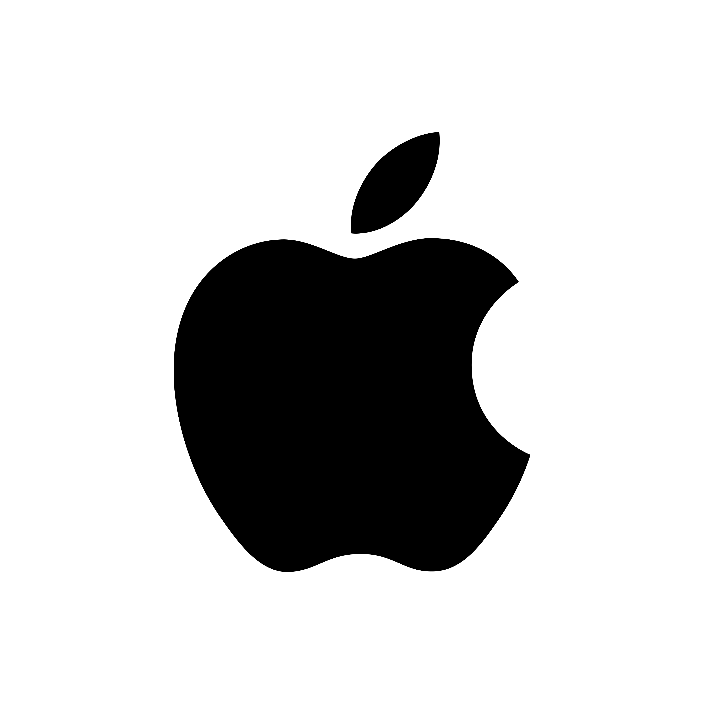

Apple: MacOSApple as a whole has a dominant stranglehold in the tech industry in North America, and for good reason. As a brand, they've aligned their products with "luxury", while delivering experiences that are undeniably smooth, seamless and efficient.
Most people are familiar with the iPhone -- their leading product that "improves" every year and grosses several million dollars without the lift of a finger. However, their desktop experience on their Mac line of products, I believe, are where the true magesty of their design shines. Over the years, Apple has trademarked their sleek design and efficient components to create some of the worlds most powerful desktops and laptops at a fraction of the size of typical computers in the market. This large power means that Apple can delivery buttery smooth experiences with their operating systems, and has the ability to run several resource-intensive applications at once without as much of a lagspike or noticable battery loss.
Alhough Apple has great hardware, their software interface (or IU) is what tends to shy people away from it. Apple has locked down their operating system from a lot of customization and modifications, meaning its extremely difficult for third party developers to create applications that blend well with Apple's vision. In other words, it's Apples way or the highway. While some people don't have a problem with this since their way can satisfy their needs and use cases, many people prefer a customizable UI that lets them use the hardware however they see fit.
Microsoft Windows
Windows is the leader in the PC environment, and for good reason. Much -- if not all of their software is open-source to an extent, so its not difficult for any developer to learn and understand how it works, and hwo to modify it. Of course, Windows does have some limitations in place, but it's ability to be installed and kitted with hardware components of all types allows it to be a powerhouse in gaming, and a strong contender in general operations. It's relatively safe environment and constant upkeep from Microsoft allows it to be a decent playground for security personell as well.
My main gripe with Windows & Microsoft at the moment is how far they're taking new developments and updates, without much moderation or consieration of the average user. In the past, much of its update code was written by software engineers, and tested by those same engineers to ensure a good user interface and product efficiency. However with thier seeming reliance on Artificial Intelligance, there's been an unfortunate and exponential spike in unreliability, crashing, and in some cases destroyed computers after a poorly written update. This, coupled with Microsofts forceful update procedure and AI integration (despote users explicitly rejecting those terms) is causing many of daily Windows users to lose faith in the profucts and neighboring coorperations.
Linux Mint
Linux is the windcard that's been waiting in the sidelines for decades, waiting for its opportunity to overtake the computer industry. For many years, developers and companies have used linux, but it's mostly been utilized for it's enhanced cybersecurity and management features. But with so many flavors of Linux available *for free* for the average user to use, it's been slowly growing in support and overall daily users.
Linux is an operating system created by individual developers, with developers and users in mind. As such, Linux is truly an open source system, allowing anybody to install, customize and branch off of their system. Over the years, the average joe has been working hard to provide necessart software, security, and application updates on a regular basis, allowing anyone from a Windows or Mac environment to transfer to Linux with as little growing pains as possible.